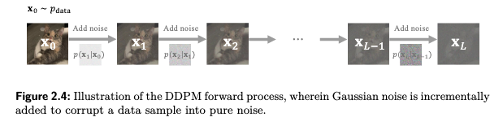

Diffusion Models - DDPM
Useful links
- Denoising Diffusion Probabilistic Models - by Jonathan Ho et al
- The Principles of Diffusion Models - by Chieh-Hsin Lai et al
- What are Diffusion Models? - by Lilian Weng
- Diffusion Models: DDPM | Generative AI Animated - by Deepia
Introduction
There are three perspectives to understand diffusion model [Lai et al. 2025]. The most classical one is DDPM from the hierarchical VAE perspective. The most general perspective is from the score-based generative model perspective through SDE (stochastic differential equation). There are some "nuanced" settings in DDPM that can be later validated by SDE perspective. The third way is from flow-based models. This blog is a summary of DDPM from hierarchical VAE perspective.Forward process
Notations
- $\boldsymbol{X}_t$, $\boldsymbol{\mathcal{E}}$, $T$ — random variables
- $\boldsymbol{x}_t$, $\boldsymbol{\epsilon}$, $t$ — realizations or samples, accordingly
- $p(\boldsymbol{x}_t) $ — probability density function of $\boldsymbol{X}_t$, more explicitly $p_{\boldsymbol{X}_t}(\boldsymbol{x}_t)$
- $L$ — constant, the number of total diffusion steps

Here more explicitly we use $\boldsymbol{X}_0 \sim p_{data}$.
Therefore, $$ \begin{aligned} q\left(\boldsymbol{x}_t \mid \boldsymbol{x}_{t-1}\right)&:=\mathcal{N}\left(\boldsymbol{x}_t ; \sqrt{1-\beta_t} \cdot \boldsymbol{x}_{t-1}, \ \beta_t \boldsymbol{I}\right) \\ q\left(\boldsymbol{x}_t \mid \boldsymbol{x}_0 \right)&= \mathcal{N} \left(\boldsymbol{x}_t ; \sqrt{\bar{\alpha}_t}\cdot \boldsymbol{x}_0 , \ (1-\bar{\alpha}_t) \boldsymbol{I} \right) \end{aligned} $$
Training
Training objective
To predict the noise used in the closed-form construction of the noisy sample $\boldsymbol{x}_t$, the commonly used simplified training objective is
\[
\mathcal{L} = \mathop{\mathbb{E}}\limits_{T} \ \mathop{\mathbb{E}}\limits_{\boldsymbol{X}_0 } \ \mathop{\mathbb{E}}\limits_{\boldsymbol{\mathcal{E}} }
\left[ \| \boldsymbol{\mathcal{E}} - \text{UNet}_{\boldsymbol{\theta}}(\boldsymbol{X}_T, T) \|^2 \right]
\]
\[
\text{with}\ \boldsymbol{X}_T = \sqrt{\bar{\alpha}_T} \boldsymbol{X}_0+\sqrt{1-\bar{\alpha}_T} \boldsymbol{\mathcal{E}}
\]
with random variables $T \sim \mathcal{U}(\{1,..., L\})$, $\boldsymbol{X}_0 \sim p_{\text{data}}$, and $\boldsymbol{\mathcal{E}} \sim \mathcal{N}(\boldsymbol{0}, \boldsymbol{I})$.
The expectations can only be estimated using finite realizations drawn from these distributions.
By drawing many realizations from these distributions, the training objective can be approximated by
\[
\hat{\mathcal{L}} =
\sum_{t}\ \sum_{\boldsymbol{x}_0}\ \sum_{\boldsymbol{\epsilon}}
\left[
\left\| \boldsymbol{\epsilon}
- \text{UNet}_{\boldsymbol{\theta}}\left(\boldsymbol{x}_t, t\right)
\right\|^2
\right]
\]
\[
\text{with}\ \boldsymbol{x}_t
= \sqrt{\bar{\alpha}_t}\boldsymbol{x}_0
+ \sqrt{1-\bar{\alpha}_t}\boldsymbol{\epsilon}.
\]
Here $t$, $\boldsymbol{x}_0$, $\boldsymbol{\epsilon}$, and $\boldsymbol{x}_t$ are lowercase because they are realizations of $T$, $\boldsymbol{X}_0$, $\boldsymbol{\mathcal{E}}$, and $\boldsymbol{X}_t$.
Computing this empirical loss over all realizations for every update is still too expensive. In practice, we adopt SGD (stochastic gradient descent).
In each iteration, we pick one image $\boldsymbol{x}_0$ from the training set, one noise realization $\boldsymbol{\epsilon}$, and one time realization $t$.
Then construct $\boldsymbol{x}_t = \sqrt{\bar{\alpha}_t}\boldsymbol{x}_0+\sqrt{1-\bar{\alpha}_t}\boldsymbol{\epsilon}$ and calculate the single-sample loss
\[
\hat{\mathcal{L}}_{\text{SGD}} =
\left\| \boldsymbol{\epsilon} - \text{UNet}_{\boldsymbol{\theta}}(\boldsymbol{x}_t, t) \right\|^2
\]
\[
\text{with}\ \boldsymbol{x}_t
= \sqrt{\bar{\alpha}_t}\boldsymbol{x}_0
+ \sqrt{1-\bar{\alpha}_t}\boldsymbol{\epsilon}.
\]
The UNet parameters ${\boldsymbol{\theta}}$ are updated by one gradient step downhill [Ho et al. 2020].
- repeat
- Sample an image $\boldsymbol{x}_0$ from the training set $\mathcal{D}$
- Sample a time step $t$ uniformly from $\{1, \ldots, L\}$
- Sample a noise realization $\boldsymbol{\epsilon}$ from $\mathcal{N}(\boldsymbol{0}, \boldsymbol{I})$
- Construct $\boldsymbol{x}_t=\sqrt{\bar{\alpha}_t}\boldsymbol{x}_0+\sqrt{1-\bar{\alpha}_t}\boldsymbol{\epsilon}$
- Calculate the gradient $\nabla_{\boldsymbol{\theta}} \left\| \boldsymbol{\epsilon} - \text{UNet}_{\boldsymbol{\theta}}\left(\boldsymbol{x}_t, t\right) \right\|^2$
- Take a step against the gradient's direction
- until converged
Intuition of training steps
At each training step, after drawing $(t, \boldsymbol{x}_0, \boldsymbol{\epsilon})$, we know exactly the noise realization $\boldsymbol{\epsilon}$ used to construct the noisy image $\boldsymbol{x}_t$, either large or small. We move the UNet parameters ${\boldsymbol{\theta}}$ in the direction of predicting this $\boldsymbol{\epsilon}$ a little better. We do not make it predict exactly $\boldsymbol{\epsilon}$ at this step, since we just move one gradient step forward.
For example, from the previous training steps we already have a model $\text{UNet}_{{\boldsymbol{\theta}}}$ and it gives a prediction $\text{UNet}_{{\boldsymbol{\theta}}}(\boldsymbol{x}_t, t)=0.3$. At this training step we know the realized noise value $\boldsymbol{\epsilon}$ is 0.5, so we calculate the gradient and update ${\boldsymbol{\theta}}$ to make the UNet predict 0.31 instead of 0.3 at this realized pair $(\boldsymbol{x}_t,t)$. Over many training iterations, it learns a function that predicts the expected noise $\text{UNet}_{\boldsymbol{\theta}^*}(\boldsymbol{x}_t, t) \approx \mathbb{E}[\boldsymbol{\mathcal{E}} \mid \boldsymbol{X}_t=\boldsymbol{x}_t, T=t]$.
Sampling
After training, we have the $\text{UNet}_{{\boldsymbol{\theta}}^*}$ to predict the noise added at each step. We can use it to generate new images. We start from a pure noise image and iteratively denoise it.
This generation process is also called sampling, since at each step we are essentially sampling from the reverse diffusion distribution $p_{{\boldsymbol{\theta}}^*}(\boldsymbol{x}_{t-1} \mid \boldsymbol{X}_t = \boldsymbol{x}_t)$ conditioned on the current realization $\boldsymbol{x}_t$.
- Sample initial noise image $\boldsymbol{x}_L$ from the prior distribution $\mathcal{N}(\boldsymbol{0}, \boldsymbol{I})$
- For $t=L,L-1,\ldots,1$ do
2.1:Let $\boldsymbol{x}_t$ and time step $t$ go through the deterministic network and get the predicted noise $\text{UNet}_{{\boldsymbol{\theta}}^*}(\boldsymbol{x}_t, t)$;
then calculate the reverse mean $$\textcolor{Orange}{\boldsymbol{\mu}_{{\boldsymbol{\theta}}^*}(\boldsymbol{x}_t, t) =\dfrac{1}{\sqrt{\alpha_t}}\left(\boldsymbol{x}_t-\frac{1-\alpha_t}{\sqrt{1-\bar{\alpha}_t}} \text{UNet}_{{\boldsymbol{\theta}}^*}(\boldsymbol{x}_t, t)\right)}, $$ which fully describes the estimated reverse Gaussian distribution $$ \qquad \textcolor{Orange}{p_{{\boldsymbol{\theta}}^*}\left(\boldsymbol{x}_{t-1} \mid \boldsymbol{X}_t = \boldsymbol{x}_t\right) = \mathcal{N}\Bigl(\boldsymbol{x}_{t-1}; \ \boldsymbol{\mu}_{{\boldsymbol{\theta}}^*}(\boldsymbol{x}_t, t), \sigma_t^2\boldsymbol{I}\Bigr) }. $$2.2:Then sample the next realization from this reverse distribution $\textcolor{Orange}{p_{{\boldsymbol{\theta}}^*}(\boldsymbol{x}_{t-1} \mid \boldsymbol{X}_t = \boldsymbol{x}_t)}$.
Since this reverse distribution is Gaussian, this process is equivalent to computing
$\qquad \boldsymbol{x}_{t-1} = \textcolor{Orange}{\boldsymbol{\mu}_{{\boldsymbol{\theta}}^*}(\boldsymbol{x}_t, t)} + \textcolor{Orange}{\sigma_t} \boldsymbol{z}$, where $\boldsymbol{z}$ is a realization from $\mathcal{N}(\boldsymbol{0}, \boldsymbol{I})$,
and the reverse std $\textcolor{Orange}{\sigma_t}$ can be empirically set as $\sqrt{\beta_t}$
(see more in the next section).
Conceptually is "mean + randomness" - Repeat until $t=1$ to get the final generated image $\boldsymbol{x}_0$.
Mathematical derivations and connections to SDE
Notations
- $\beta_t$ — forward variance
- $\textcolor{blue}{\tilde{\beta}_t}$ — reverse variance, additionally conditioned on clean data $\boldsymbol{x}_0$
- $\textcolor{Orange}{\sigma_t^2}$ — reverse variance
- $\textcolor{blue}{\tilde{\mu}_t}$ — reverse mean, additionally conditioned on clean data $\boldsymbol{x}_0$
- $\textcolor{Orange}{\boldsymbol{\mu}_\theta}$ — reverse mean, to be predicted
Forward process (repeat)
Noise-adding forward process, with pre-defined noise-variance-schedule $\{\beta_t\}_{t=1}^L$:
$$
\begin{aligned}
\boldsymbol{X}_t
&:= \sqrt{1-\beta_t} \cdot \boldsymbol{X}_{t-1}+ \sqrt{\beta_t} \cdot \boldsymbol{\mathcal{E}} \\
&= \sqrt{\bar{\alpha}_t} \cdot \boldsymbol{X}_0 + \sqrt{1-\bar{\alpha}_t} \cdot \boldsymbol{\mathcal{E}}
\end{aligned}
$$
where $\boldsymbol{\mathcal{E}} \sim \mathcal{N} (\boldsymbol{0}, \boldsymbol{I})$, $\alpha_t := 1-\beta_t$ and $\bar{\alpha}_t := \prod_{s=1}^t \alpha_s$.
Therefore,
$$
\begin{aligned}
q\left(\boldsymbol{x}_t \mid \boldsymbol{x}_{t-1}\right)&:=\mathcal{N}\left(\boldsymbol{x}_t ; \sqrt{1-\beta_t} \cdot \boldsymbol{x}_{t-1}, \ \beta_t \boldsymbol{I}\right) \\
q\left(\boldsymbol{x}_t \mid \boldsymbol{x}_0 \right)&= \mathcal{N} \left(\boldsymbol{x}_t ; \sqrt{\bar{\alpha}_t}\cdot \boldsymbol{x}_0 , \ (1-\bar{\alpha}_t) \boldsymbol{I} \right)
\end{aligned}
$$
Why maximize likelihood?
The common goal of generative modeling is to choose model parameters $\boldsymbol{\theta}$ that make the observed training samples likely. Given a dataset $\mathcal{D}=\{\boldsymbol{x}_0^{(1)}, \boldsymbol{x}_0^{(2)}, \ldots, \boldsymbol{x}_0^{(n)}\}$, each $\boldsymbol{x}_0^{(i)}$ is a realization of an iid random variable $\textcolor{red}{\boldsymbol{X}_0^{(i)} \sim p_{data}:=q(\boldsymbol{x}_0)} $. We want to have a model $p_{\boldsymbol{X}_0;\boldsymbol{\theta}}(\boldsymbol{x}_0) \approx p_{data}$. Maximum likelihood estimation writes $$ \begin{aligned} \boldsymbol{\theta}^* &= \arg\max_{\boldsymbol{\theta}} \prod_{i=1}^\infty p_{\boldsymbol{X}_0;\boldsymbol{\theta}}\left(\boldsymbol{x}_0^{(i)}\right) \\ &= \arg\max_{\boldsymbol{\theta}} \sum_{i=1}^\infty \log p_{\boldsymbol{X}_0;\boldsymbol{\theta}}\left(\boldsymbol{x}_0^{(i)}\right) \\ &= \arg\max_{\boldsymbol{\theta}} \textcolor{red}{ \mathop{\mathbb{E}}\limits_{\boldsymbol{X}_0 \sim p_{\text{data}}} \left[ \log p_{\boldsymbol{X}_0;\boldsymbol{\theta}}(\boldsymbol{x}_0) \right]} \\ &\approx \arg\max_{\boldsymbol{\theta}} \frac{1}{n}\sum_{i=1}^{n} \log p_{\boldsymbol{X}_0;\boldsymbol{\theta}}\left(\boldsymbol{x}_0^{(i)}\right). \end{aligned} $$ Here $p_{\boldsymbol{X}_0;\boldsymbol{\theta}}(\boldsymbol{x}_0)$ is the model density of the random variable $\boldsymbol{X}_0$ evaluated at the observed sample value $\boldsymbol{x}_0$.
Training objective
Training objective with ELBO (evidence lower bound)
We aim to maximize $ \textcolor{red}{\mathop{\mathbb{E}}\limits_{\boldsymbol{X}_0 \sim p_{\text{data}}} \left[\log p_{\boldsymbol{X}_0;\boldsymbol{\theta}}(\boldsymbol{x}_0)\right]} $,
but it is intractable, so we maximize ELBO.
Let $\boldsymbol{X}_{0:L} := \boldsymbol{X}_0, \boldsymbol{X}_1, ..., \boldsymbol{X}_L$.
Let latents $\boldsymbol{Z} := \boldsymbol{X}_{1:L} := \boldsymbol{X}_1, ..., \boldsymbol{X}_L$.
Step 1: Variational inference with latent variables $\boldsymbol{Z}:=\boldsymbol{X}_{1:L}$
$$
\begin{aligned}
\text{(1)}\quad
&\quad \ \log p_{\boldsymbol{X}_0;\boldsymbol{\theta}}(\boldsymbol{x}_0) \\
\text{(2)}\quad
&= \log \int p_\theta(\boldsymbol{x}_{0}, \boldsymbol{z}) \mathrm{d} \boldsymbol{z} \\
\text{(3)}\quad
&= \log \int \textcolor{grey}{q(\boldsymbol{z} \mid \boldsymbol{x}_0)} \frac{p_\theta(\boldsymbol{x}_{0}, \boldsymbol{z})}{\textcolor{grey}{q(\boldsymbol{z} \mid \boldsymbol{x}_0)}} \mathrm{d} \boldsymbol{z} \\
\text{(4)}\quad
&= \log \mathop{\mathbb{E}}\limits_{\boldsymbol{Z} \sim \textcolor{grey}{q(\boldsymbol{z} \mid \boldsymbol{x}_0)}}\left[ \frac{p_\theta(\boldsymbol{x}_{0}, \boldsymbol{z})}{\textcolor{grey}{q(\boldsymbol{z} \mid \boldsymbol{x}_0)}} \right] \\
\text{(5)}\quad
&= \mathop{\mathbb{E}}\limits_{\boldsymbol{Z} \sim \textcolor{grey}{q(\boldsymbol{z} \mid \boldsymbol{x}_0)}} \left[ \log \frac{p_\theta(\boldsymbol{x}_{0}, \boldsymbol{z})}{\textcolor{grey}{q(\boldsymbol{z} \mid \boldsymbol{x}_0)}} \right]
+ D_{\text{KL}}\Big(\textcolor{grey}{q(\boldsymbol{z} \mid \boldsymbol{x}_0)} \ \| \ p_\theta(\boldsymbol{z} \mid \boldsymbol{x}_0)\Big) \\
\text{(6)}\quad
& \geq \mathop{\mathbb{E}}\limits_{\boldsymbol{Z} \sim \textcolor{grey}{q(\boldsymbol{z} \mid \boldsymbol{x}_0)}} \left[ \log \frac{p_\theta(\boldsymbol{x}_{0}, \boldsymbol{z})}{\textcolor{grey}{q(\boldsymbol{z} \mid \boldsymbol{x}_0)}} \right] := \text{ELBO}
\end{aligned}
$$
- (1) This is the log-evidence.
- (2) Expand $p_\theta(\boldsymbol{x}_0)$ with latent variables $\boldsymbol{Z}$. More concretely, $p_\theta(\boldsymbol{x}_0, \boldsymbol{z}) = p_\theta(\boldsymbol{x}_0 \mid \boldsymbol{z}) p_\theta(\boldsymbol{z}) = p_\theta(\boldsymbol{x}_0 \mid \boldsymbol{x}_{1:L}) p_\theta(\boldsymbol{x}_{1:L}) = p_\theta(\boldsymbol{x}_0 \mid \boldsymbol{x}_1) p_\theta(\boldsymbol{x}_1 \mid \boldsymbol{x}_2) \cdots p_\theta(\boldsymbol{x}_{L-1} \mid \boldsymbol{x}_L) p_{prior}(\boldsymbol{x}_L) = p_{prior}(\boldsymbol{x}_L) \prod_{t=1}^L p_\theta(\boldsymbol{x}_{t-1} \mid \boldsymbol{x}_t).$ This integral over the latent space is intractable, since there is too much to compute directly.
- (3) Variational inference by introducing $q(\boldsymbol{z} \mid \boldsymbol{x}_0)$, which is a known distribution. More concretely, $q(\boldsymbol{z} \mid \boldsymbol{x}_0) = q(\boldsymbol{x}_{1:L} \mid \boldsymbol{x}_0) = q(\boldsymbol{x}_1 \mid \boldsymbol{x}_0) q(\boldsymbol{x}_2 \mid \boldsymbol{x}_1, \boldsymbol{x}_0) \cdots q(\boldsymbol{x}_L \mid \boldsymbol{x}_{L-1}, \ldots, \boldsymbol{x}_0) = \prod_{t=1}^L q(\boldsymbol{x}_{t} \mid \boldsymbol{x}_{t-1}) .$
- (4) Rewrite the integral as an expectation over $\boldsymbol{Z} \sim q(\boldsymbol{z} \mid \boldsymbol{x}_0)$.
- (5) Decompose log-evidence into ELBO plus a non-negative KL divergence.
$q(\boldsymbol{z} \mid \boldsymbol{x}_0)$: known and tractable forward noising pathes from $\boldsymbol{x}_0$;
$p_\theta(\boldsymbol{z} \mid \boldsymbol{x}_0)$: intractable, given generative model $p_\theta$ and observation $\boldsymbol{x}_0$, what distribution do we assign to the hidden path $\boldsymbol{x}_{1:L}$ that could have generated $\boldsymbol{x}_0$?
- (6) Jensen's inequality gives the ELBO lower bound; equality holds when $q(\boldsymbol{z} \mid \boldsymbol{x}_0)=p_\theta(\boldsymbol{z} \mid \boldsymbol{x}_0)$.
Since when $\beta_t$ are small, $\textcolor{Orange}{p_\theta\left(\boldsymbol{x}_{t-1} \mid \boldsymbol{x}_t\right)}$ is also Gaussian, model the reverse as an isotropic Gaussian distribution as $\textcolor{Orange}{p_\theta\left(\boldsymbol{x}_{t-1} \mid \boldsymbol{x}_t\right) = \mathcal{N}\Bigl(\boldsymbol{x}_{t-1}; \boldsymbol{\mu}_\theta(\boldsymbol{x}_t,t), \sigma_t^2 \boldsymbol{I}\Bigr)}$. The reverse variance $\textcolor{Orange}{\sigma_t^2}$ can be empirically predefined as $\beta_t$ or $\textcolor{blue}{\tilde{\beta}_t}$, or an interpolation between these two, or a learnable parameter [1]. Then this reverse distribution is fully described by the mean $\textcolor{Orange}{\boldsymbol{\mu}_\theta(\boldsymbol{x}_t,t)}$.
Step 3: Thanks to the above known Gaussian and parameterized Gaussian, the KL divergence can have a closed form solution. The training objective (mean-prediction) becomes to minimize $$ \textcolor{red}{\mathop{\mathbb{E}}\limits_{\boldsymbol{X}_{0} \sim p_{data}}}\ \mathop{\mathbb{E}}\limits_{\boldsymbol{X}_{1:L} \sim \textcolor{grey}{q(\boldsymbol{x}_{1:L} \mid \boldsymbol{x}_0)}} \left[\sum_{t=2}^L \frac{1}{2\sigma_t^2} \Bigl\| \textcolor{blue}{\tilde{\boldsymbol{\mu}}_t(\boldsymbol{X}_t, \boldsymbol{X}_0)} - \textcolor{Orange}{\boldsymbol{\mu}_\theta(\boldsymbol{X}_t, t)} \Bigr\|^2 \right] $$ We are trying to make $\textcolor{Orange}{p_\theta\left(\boldsymbol{x}_{t-1} \mid \boldsymbol{x}_t\right)}$ close to $\textcolor{blue}{q\left(\boldsymbol{x}_{t-1} \mid \boldsymbol{x}_t, \boldsymbol{x}_0\right)}$, by making $\textcolor{Orange}{\boldsymbol{\mu}_\theta(\boldsymbol{X}_t, t)}$ close to $\textcolor{blue}{\tilde{\boldsymbol{\mu}}_t(\boldsymbol{X}_t, \boldsymbol{X}_0)}$ on average.
This loss is trainable while usually we often rewrite it as a noise prediction ($\epsilon$-prediction) form with a reparameterization of $\textcolor{Orange}{\boldsymbol{\mu}_\theta(\boldsymbol{x}_t, t)}$ [2]. The training objective ($\epsilon$-prediction) becomes $$ \begin{gathered} \mathop{\mathbb{E}}\limits_{\boldsymbol{X}_0} \mathop{\mathbb{E}}\limits_{\boldsymbol{\mathcal{E}}} \left[ \sum_{t=2}^L \frac{\beta_t^2}{2\textcolor{orange}{\sigma_t^2} \alpha_t (1 - \bar{\alpha}_t)} \Bigl\|\boldsymbol{\mathcal{E}} - \boldsymbol{\epsilon}_\theta(\boldsymbol{X}_t, t)\Bigr\|^2 \right] \\ \text{with}\ \boldsymbol{X}_t = \sqrt{\bar{\alpha}_t} \boldsymbol{X}_0 + \sqrt{1-\bar{\alpha}_t} \boldsymbol{\mathcal{E}} \end{gathered} $$ The weights $\frac{\beta_t^2}{2\textcolor{orange}{\sigma_t^2} \alpha_t (1 - \bar{\alpha}_t)}$ gives different importance to different time steps. However, in the original DDPM paper, the authors found that it is beneficial to directly use a variant as $$ \begin{gathered} \mathop{\mathbb{E}}\limits_{T} \mathop{\mathbb{E}}\limits_{\boldsymbol{X}_0} \mathop{\mathbb{E}}\limits_{\boldsymbol{\mathcal{E}}} \Bigl[ \Bigl\|\boldsymbol{\mathcal{E}} - \boldsymbol{\epsilon}_\theta(\boldsymbol{X}_T, T)\Bigr\|^2 \Bigr] \\ \text{with}\ \boldsymbol{X}_T = \sqrt{\bar{\alpha}_T} \boldsymbol{X}_0 + \sqrt{1-\bar{\alpha}_T} \boldsymbol{\mathcal{E}},\ \text{and} \ T \sim \mathcal{U}(\{1,..., L\}) \end{gathered} $$
Comments
[1] The empirical choice of $\textcolor{Orange}{\sigma_t^2}$ was later validated by the continuous SDE formulation with diffusion coefficient $g(t)$. Consider the continuous time limit $\Delta t \to 0$, let $\beta_t:=\beta(t) \Delta t$, with the definition of $\bar{\alpha}_t$ we have $\bar{\alpha}_t \approx e^{-\int_0^t \beta(s) d s}$. Then we can compute $\bar{\alpha}_{t-\Delta t}$ and $\tilde{\beta}_t=\beta(t) \Delta t \frac{1-\bar{\alpha}_{t-\Delta t}}{1-\bar{\alpha}_t}$. As $\Delta t \to 0$, we have $\textcolor{blue}{\tilde{\beta}_t} \rightarrow \beta_t$. Thus, the distinction between $\textcolor{blue}{\tilde{\beta}_t}$ and $\beta_t$ is only a finite-step artifact, and both work well in practice. The Gaussianity of the reverse distribution can also be justified by the SDE formulation. The reverse mean $\textcolor{Orange}{\boldsymbol{\mu}_\theta(\boldsymbol{x}_t, t)}$ is also in line with the one derived by the SDE formulation.
[2] Reparameterization in detail: subsitute with $\boldsymbol{x}_0 = \frac{1}{\sqrt{\bar{\alpha}_t}}\left(\boldsymbol{x}_t-\sqrt{1-\bar{\alpha}_t} \boldsymbol{\epsilon}\right)$, the known reverse mean (conditioned on $\boldsymbol{x}_0$) can be rewritten as $$ \textcolor{blue}{ \tilde{\mu}_t (\boldsymbol{x}_t ,\boldsymbol{x}_0) = \frac{1}{\sqrt{\alpha_t}}\left(\boldsymbol{x}_t-\frac{1-\alpha_t}{\sqrt{1-\bar{\alpha}_t}} \boldsymbol{\epsilon}\right) = \tilde{\mu}_t (\boldsymbol{x}_t ,\boldsymbol{\epsilon}) } $$ To minimize the loss, $\textcolor{Orange}{\boldsymbol{\mu}_\theta(\boldsymbol{x}_t, t)}$ should be close to $\textcolor{blue}{\tilde{\mu}_t (\boldsymbol{x}_t ,\boldsymbol{\epsilon})}$. We choose to use the same form to represent $\textcolor{Orange}{\boldsymbol{\mu}_\theta(\boldsymbol{x}_t, t)}$ (a "man-made" reparameterization), $$ \color{Orange}\boldsymbol{\mu}_\theta\left(\boldsymbol{x}_t, t\right) := \frac{1}{\sqrt{\alpha_t}}\left(\boldsymbol{x}_t-\frac{1-\alpha_t}{\sqrt{1-\bar{\alpha}_t}} \boldsymbol{\epsilon}_\theta\left(\boldsymbol{x}_t, t\right)\right) $$ Then $$ \textcolor{blue}{\tilde{\mu}_t (\boldsymbol{x}_t ,\boldsymbol{x}_0)}-\textcolor{Orange}{\boldsymbol{\mu}_\theta\left(\boldsymbol{x}_t, t\right)}=\frac{\beta_t}{\sqrt{\alpha_t} \sqrt{1-\bar{\alpha}_t}}\left(\boldsymbol{\epsilon}_\theta\left(\boldsymbol{x}_t, t\right)-\boldsymbol{\epsilon}\right) $$